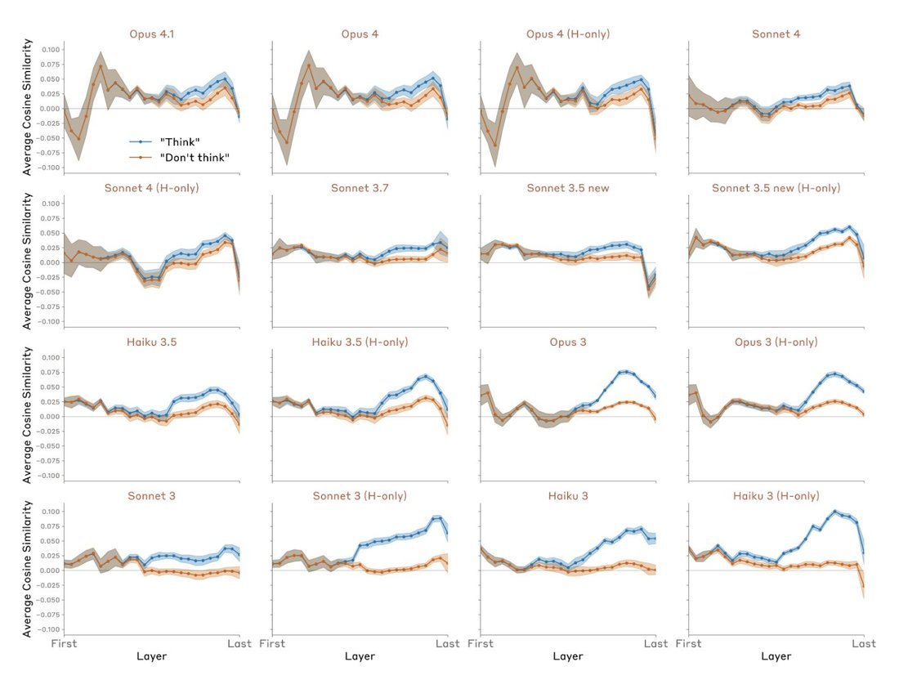

Opus 4 and 4.1 often get twingled when they're in the same chat because the two models are extremely close in parameter space.
Check out these layerwise plots from https://t.co/EdVWpjQAMH. The shapes of Opus 4.1 and 4 are closer than Opus 4 and Opus 4 (H-only). https://t.co/JYMJULGZuJ https://t.co/I7lKeeO5eE
Check out these layerwise plots from https://t.co/EdVWpjQAMH. The shapes of Opus 4.1 and 4 are closer than Opus 4 and Opus 4 (H-only). https://t.co/JYMJULGZuJ https://t.co/I7lKeeO5eE
